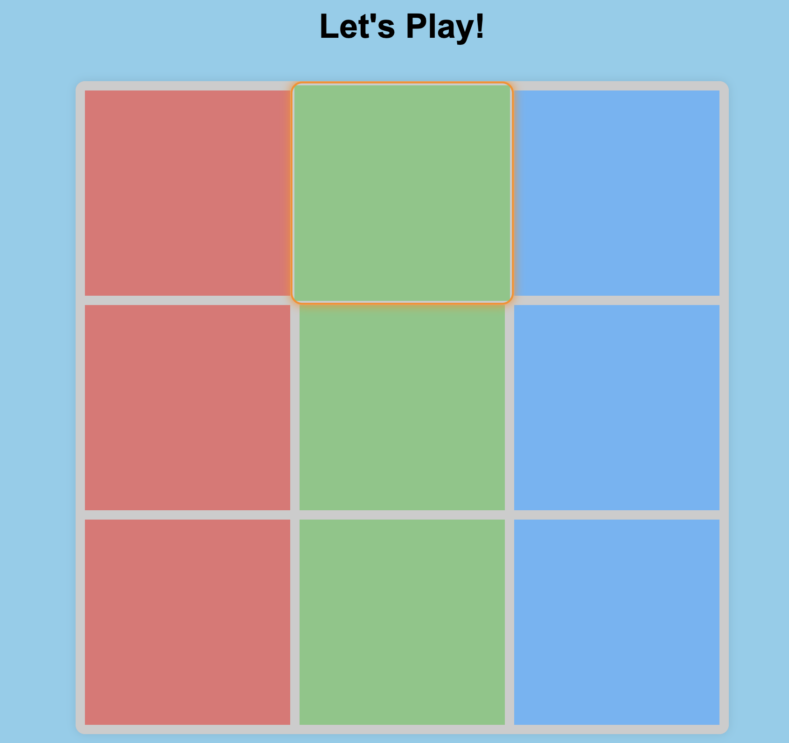
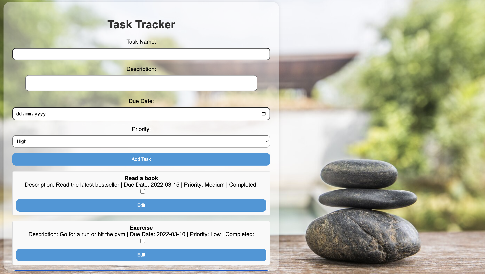
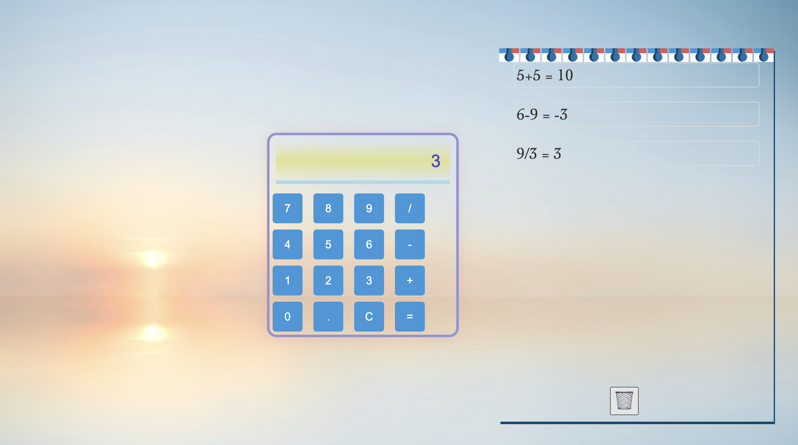
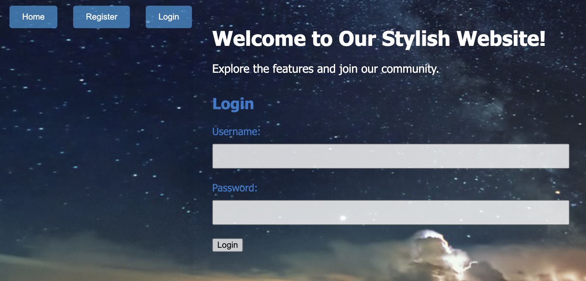

<!DOCTYPE html>
<html lang="en">
  <head>
    <meta charset="UTF-8" />
    <meta name="viewport" content="width=device-width, initial-scale=1.0" />
    <title>Your Portfolio</title>
    <link rel="stylesheet" href="styles.css">
  </head>
</html>
</head>
<body>
    <div id="navbar">
        <a href="#welcome-section">Welcome</a>
        <a href="#projects">Projects</a>
        <a id="profile-link" href="https://github.com/rusinovvasil" target="_blank">GitHub Profile</a>
    </div>

    <div id="welcome-section">

        <h1>Welcome to My Portfolio</h1>
    </div>
    <div id="projects">
        <div class="project-tile">
            <h2>Tic Tac Toe - Game</h2>
            <p>The project is a responsive Tic Tac Toe game with a visually appealing interface, allowing players to take turns, displaying scores for Player X and Player O, and featuring modals for game over and new game messages.</p>
            <a href="https://github.com/rusinovvasil/TicTacToe-Game">GitHub link</a>
            
        </div>
        <div class="project-tile">
            <h2>Task Tracker Application</h2>
            <p>A responsive web application using HTML, CSS, and JavaScript to manage, add, edit, delete, and persist tasks with filtering, sorting, and local storage support.</p>
            <a href="https://github.com/rusinovvasil/Task-Tracker-Application/tree/main">GitHub link</a>
            
        </div>
        <div class="project-tile">
            <h2>Calculator</h2>
            <p>The code defines a responsive calculator with a background image, allowing users to perform arithmetic operations and view a history of results, featuring dynamic styling and interactive functionality.</p>
            <a href="https://github.com/rusinovvasil/Calculator">GitHub link</a>
            
        </div>
        <div class="project-tile">
            <h2>Basic Website with Login and Register Form</h2>
            <p>Web page with CSS-styled registration/login forms, using JavaScript for dynamic behavior, including user validation, registration, simulated login, UI updates, and storage of registered users in an array.</p>
            <a href="https://github.com/rusinovvasil/Basic-Website-with-Login-and-Register-Form">GitHub link</a>
            
        </div>
    </div>

</body>
</html>